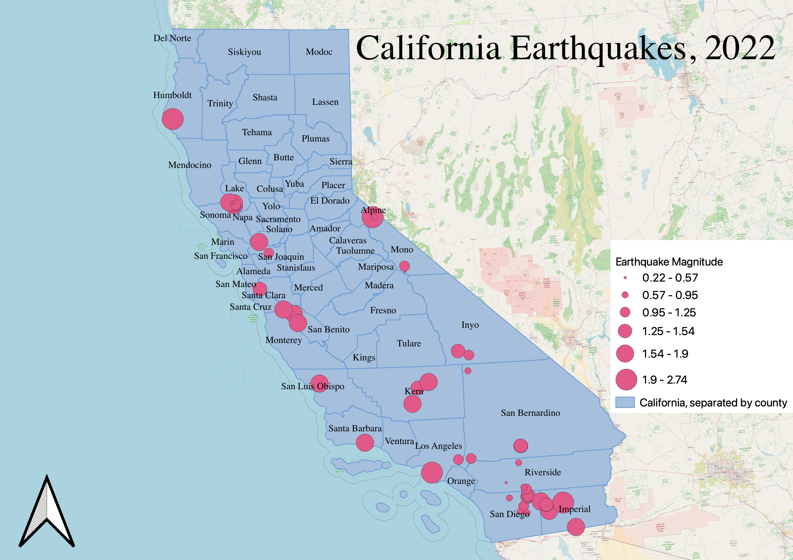

Homework 7: Proportional Symbol Map
James Hoglund
This is a proportional symbol map of earthquakes in California in 2022. As shown in the legend,
each dot represents an earthquake in California in 2022, and the size of the dot is proportional to
its magnitude. I chose this dataset to make a map because the topic intrigued me. Everyone knows
that California is prone to earthquakes, but the sheer number of them in the past year really surprised me.

Data used for this project
Original CSV dataset
geojson of the cleaned data points
Link to shapefile of California and its counties